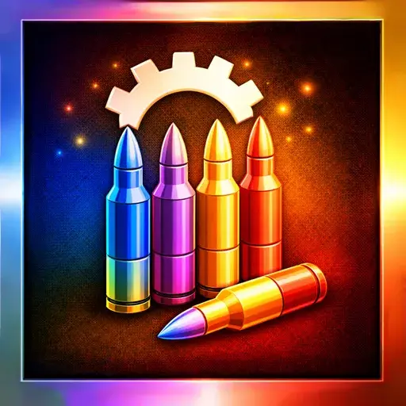

RZCustomItemTiers
- Downloads
- 3,916
- Favourites
- 5
- Mod lists
- 6
🎨 Now includes several color themes !
ODT-ItemInfo is a great mod and its item information display is very useful. That said, I was never fully satisfied with its color coding implementation, and this mod is my own attempt at doing it better.
In ItemInfo’s approach, items are colored by rarity, essentially, how hard they are to obtain. The problem is that acquisition difficulty and actual usefulness are two different things. For new players especially, this creates a confusing visual language where high-value colors don’t reliably mean “this is what you want to use”.
I also realized that most immediately recognizable items (weapons, medical supplies, gear…) don’t really benefit from color coding at all. When you already know what everything is at a glance, adding colors to those items creates visual noise more than anything else.
So the approach ended up being fairly simple :
- Most item categories get no color : weapons, armor, meds, and other instantly readable items are left as default. Less clutter.
- The tier system is small and intentional : instead of 7+ color grades, there are only 6 tiers, focused almost exclusively on ammo and a handful of important categories like armor plates and keys.
The goal is a color system you can actually trust : if something is glowing red, it means it’s genuinely the best option in its class.
⚫ Default — Unassigned or not worth highlighting.
🔵 Notable — Ammo & armor plates : decent option. - OR - Other items : valued 30k–60k roubles.
🟣 Superior — Ammo & armor plates : good, reliable choice. - OR - Other items : valued 60k–90k roubles.
🟡 Excellent — Ammo & armor plates : high-end, strong performer. - OR - Other items : valued 90k–200k roubles.
🔴 Elite — Ammo & armor plates : best-in-class, hard capped at 1 or 2 per category. - OR - Other items : valued 200k+ roubles.
⚪ Situational — Ammo only : high damage but low pen aka leg meta (white/grey).
🟢 Quest — Required for a quest.
💡 Quest-only items are colored automatically. Quest keys for Customs and Reserve have been manually added on top of that. Other maps are not covered yet, if you want to add them, drop the TPLs in
config/keys.json.
💡 Situational tier colors are intentionally slightly lighter than Default. These rounds are niche enough that new players don’t need to pay attention to them, so they must stay visually quiet.
All config files live in config/. The system runs 4 passes on every item at server startup, in order of increasing priority.
masterConfig.json
Defines the color for each tier name and the global price thresholds used for automatic tiering. Supports multiple color presets via the Theme field : set to dark, bright or verybright.
categoryRules.json — Pass 1
Maps item category IDs to tier names. Walks the DB parent chain, so assigning a category also covers all its sub-categories automatically. The full vanilla category hierarchy is included as comments for reference.
By default, no category is assigned a meaningful tier, every root category is mapped to Default. This means the file currently serves as a blanket reset, but you can assign any tier to any category if you want to color entire item families at once.
Quest items flagged by Tarkov’s QuestItem property are automatically assigned the Quest tier at this pass. However, this does not cover quest-required keys, which are not flagged as quest items in the DB : those are handled manually in config/keys.json.
priceRules.json — Pass 2
Lists category IDs whose tier should be assigned automatically based on handbook price, using the thresholds defined in masterConfig.json. Items below the lowest threshold fall back to Default. Uses the same DB category IDs as categoryRules.json.
Override files - Pass 3
ammo.json, armorplates.json, and any other *.json in config/ map individual item TPLs to tier names with absolute priority. Set "Enabled": false to disable a file without deleting it.
The per-TPL overrides are intentionally split across multiple files rather than lumped into one. This makes updates easier to manage : if you’ve built your own custom config, you can replace or ignore individual files without touching everything else. It also makes it easier to contribute to specific categories. If you know the ammo meta better than I do and want to submit a corrected ammo.json, you’re welcome to contribute.
Ammo boxes - Pass 4
Automatically inherits the color of the corresponding loose round. No configuration required.
Quick testing
The fastest way to preview tier colors across all items is to use CustomEconomy alongside this mod :
- Open
RZCustomEconomy/config/masterConfig.jsonand setEnableRoutedTradestotrue. - Open
RZCustomEconomy/config/routedTradesConfig.jsonand setForceRouteAlltotrue.
This routes every item in the game to all traders, giving you instant visual feedback on any tier change. Once you’re done tweaking, CustomEconomy can be safely removed, it is fully non-destructive.
ODT-ItemInfo
Runs after ItemInfo, so both mods are fully compatible, we will simply overwrite whatever colors it assigned. That said, if you’re using ItemInfo alongside this mod, it’s cleaner to disable its color feature in its config to avoid doing the work twice.
WTT - Content Backport
Items added by WTT - Content Backport are covered in the default config out of the box.
Other mods
Any mod that adds new items is supported, category-based and price-based tiering will apply automatically as long as the items follow the vanilla parent chain. Items that require manual tier assignment will need to be added to the appropriate override file.
Version
1.0.2
- Added Quest tier (green) : quest-only items are now colored automatically via Tarkov’s
QuestItemflag. Quest-required keys for Customs and Reserve have been added manually on top of that. Other maps are not covered yet. - Added
EnableVerboseLoggingoption inmasterConfig.json. Disabled by default to avoid log spam when missing modded items. - Minor tier adjustments on a handful of items.
Dependencies
Version
1.0.1
- Almost every round has been manually assigned to a tier based on its actual penetration value. The first version was rough, sorry about that, there are probably still a few approximations here and there, but it’s now a solid baseline. The Situational tier is also now implemented for high flesh damage rounds.
- now supports multiple color presets via a Theme field
- now always require colorconverterapi
Dependencies
Version
1.0.0
cats > dogs
fight me